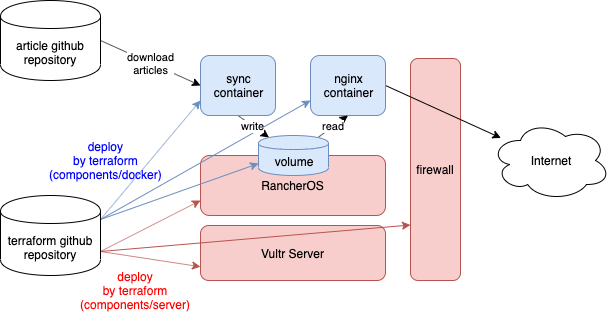

My new website
This is the article for the 2nd day of qiita advent calendar.
Hi, this is my new personal website!
My old website is still alive here (http://old.yushiomote.org), but I plan to remove it in the near future.
It's been a while since I wrote my last article. I even haven't logged in my old personal server for a long time. I forgot almost all the settings in my old personal server. All settings were done manually but I'd lost all the memo. Plus, it's based on old technologies (CentOS 6 + Wordpress).
So, I made up my mind to replace my website with something new and managable. That's why I have my new website here.
Goal
I'm kind of person who easily forgets the things I've done for my servers. My goal is therefore to manage everything by using git (github); everything including not only blog posts but also server/network settings.
Technologies
To achieve the goal, I rely on these four technologies/services to make up my website.
- Application: Hugo for blog generation.
- OS: Rancher OS for simplified docker deployment.
- Infra: Vultr VPS, which is highly customizable and high performance cloud provider.
- Deployment tool: Terraform to manage all the infra/OS/app settings as code.
Quick Introduction
I'll briefly introduce each technology.
Hugo
Hugo is a static website generator written in Go. We write blog posts in markdown. Then, hugo generates all the necessary html files from them, which is a complete website that we can just publish via something like nginx. So, we can just manage markdown files by using git.
There's many other static website generators, but I can find a lot of nice themes for hugo. So, I chose hugo right now.
Rancher OS
Rancher OS is one of the extreme linux distributions. In Rancher OS, everything is docker. Even system services are docker containers. It contains only minimum things to run docker container. The image size of Rancher OS therefore is small, which is nice when allocating a small instance in cheaper price in a cloud provider.
The interesting part is that it contains user docker and system docker. system docker is a privileged docker (root) to run system service containers like syslog or network. user docker is just to run your application container.

(from: https://rancher.com/docs/os/v1.x/en/overview/)
In the shell on Rancher OS, docker command is available from the beginning without any setup. docker ps command shows the applications users run (In my example, I'm running nginx and sync container)
[rancher@rancher ~]$ docker ps
CONTAINER ID IMAGE COMMAND CREATED STATUS PORTS NAMES
5ef6ce21a773 231d40e811cd "nginx -g 'daemon of…" 27 hours ago Up 4 hours 0.0.0.0:80->80/tcp nginx
0a483d5bd785 7b23add13d62 "/sync.sh" 28 hours ago Up 28 hours sync
On the other hand, there's another command system-docker. As the name indicates, the command is to control system docker. system-docker ps command shows the system services. The docker container in the list there is the one which runs the user containers (my nginx and sync container).
[rancher@rancher ~]$ sudo system-docker ps
CONTAINER ID IMAGE COMMAND CREATED STATUS PORTS NAMES
6eacdbeb9490 rancher/os-docker:18.09.8 "ros user-docker" 28 hours ago Up 28 hours docker
41e3af07f689 rancher/os-console:v1.5.4 "/usr/bin/ros entr..." 28 hours ago Up 28 hours console
8aacbd87b7d3 rancher/os-base:v1.5.4 "/usr/bin/ros entr..." 28 hours ago Up 28 hours ntp
a9b20b9f159f rancher/os-base:v1.5.4 "/usr/bin/ros entr..." 28 hours ago Up 28 hours network
55962e62d913 rancher/os-base:v1.5.4 "/usr/bin/ros entr..." 28 hours ago Up 28 hours udev
ccb9689f0805 rancher/container-crontab:v0.4.0 "container-crontab" 28 hours ago Up 28 hours system-cron
44fe549945da rancher/os-syslog:v1.5.4 "/usr/bin/entrypoi..." 28 hours ago Up 28 hours syslog
2ffc2b2e4321 rancher/os-acpid:v1.5.4 "/usr/bin/ros entr..." 28 hours ago Up 28 hours acpid
Vultr VPS
One benefit of Vultr VPS is that it is highly customizable. It supports various OSes including Rancher OS; you can even upload ISOs or use startup scripts to install or boot many OSes. This is nice to try freaky OSes in the cloud provider.
Vultr VPS also is compatible to the nice orchestration tool, Terraform, which I'll mention in the next section.
Plus, all the instances come with SSD attached, while they are in reasonable prices.
Terraform
This is the key technology that helps making up my website. Terraform is a tool for the concept, Infrastructure as Code. It is designed to describe entire infrastructure include servers/network settings as code. It can also describe docker settings and kubernetes cluster settings as code.
For example, this is the code to create a server and a firewall in Vultr, and then associate the two.
# Settings to connect to vultr.
provider "vultr" {
api_key = var.api_key
}
# Create a firewall
resource "vultr_firewall_group" "firewall" {
description = "Example firewall"
}
# Add one rule to the firewall
resource "vultr_firewall_rule" "fw_ports" {
firewall_group_id = vultr_firewall_group.firewall.id
protocol = "tcp"
network = "0.0.0.0/0"
from_port = 80
}
# Create a server which uses the firewall
resource "vultr_server" "server" {
plan_id = 201
os_id = 159
region_id = 1
hostname = "example"
firewall_group_id = vultr_firewall_group.firewall.id
}
The language used by Terraform is called HCL (HashiCorp Configuration Language). So, you describe infrastructure in HCL code. Applying the code by terraform command, the actual infrastructure is created. If we modify the code, the infrastructure is modified based on the code change. Reverting works. By maintaining HCL code by using git, we can maintain the state of our infrastructure in the same way as we maintain application source code.
Let's start
I wrote HCL code to define my servers. This is the structure of code repository.
.
├── components
│ ├── docker
│ │ ├── deps.tf
│ │ ├── main.tf
│ │ ├── outputs.tf
│ │ ├── templates
│ │ │ └── nginx
│ │ │ └── conf.d
│ │ │ └── site.conf
│ │ └── variables.tf
│ └── server
│ ├── dns.tf
│ ├── firewall.tf
│ ├── main.tf
│ ├── network.tf
│ ├── outputs.tf
│ ├── templates
│ │ ├── cloud-config.yml
│ │ └── startup.ipxe
│ └── variables.tf
├── environments
│ ├── prod
│ │ ├── docker.tfvars
│ │ └── server.tfvars
│ └── test
│ ├── docker.tfvars
│ └── server.tfvars
├── modules
│ └── state
│ └── main.tf
├── README.md
└── scripts
├── raw.sh
└── run.sh
There's two components:
components/server: This is the code to create Vultr servers/networks and deploy Rancher OS on them.components/docker: This is the code to run docker containers on Rancehr OS.
I prepare staging environment: test and prod.
environments/test: The environment where I keep doing some experiments.environments/prod: The environment on which you are reading this post now.
Server/OS deployment
components/server contains the code to setup vultr servers/network.
resource "vultr_server" "server" {
plan_id = 201 # 1G RAM, 25G SSD, 5$/month
os_id = 159 # Custom (No OS)
region_id = var.region_id # Tokyo
script_id = vultr_startup_script.startup.id # Id of my boot script (iPXE script)
label = "${var.system}-${terraform.workspace}"
tag = "${var.system}-${terraform.workspace}"
hostname = "${var.system}-${terraform.workspace}"
network_ids = [vultr_network.network.id]
firewall_group_id = vultr_firewall_group.firewall.id
}
This code block lanches an VPS server. The server starts without any OS installed. Instead, it loads a iPXE script to perform network installation of RancherOS.
iPXE is kind of an enhanced version of PXE. While PXE uses only TFTP, iPXE supports the various network-boot method via various protocols (HTTP/HTTPS, iSCSI, FCoE, AoE). It also supports scripting to decide how to retrieve OS images and related configuration over network.
This is the iPXE script the server uses.
#!ipxe
set base-url https://releases.rancher.com/os/latest
# Download the RancherOS kernel
kernel $${base-url}/vmlinuz rancher.state.dev=LABEL=RANCHER_STATE rancher.state.autoformat=[/dev/vda] rancher.cloud_init.datasources=[url:https://raw.githubusercontent.com/YushiOMOTE/motherbase-tf/master/components/server/templates/cloud-config.yml]
initrd $${base-url}/initrd
boot
The parameter, rancher.cloud_init.datasources=, is to use cloud-init. cloud-init is a way to pass basic configuration (such as SSH public keys) to OS on startup. cloud-init is supported by most major distributions. It's supported by Rancer OS as well.
Here simply my Rancher OS retrieves SSH public key settings by cloud-init, so that I can login immediately after it's deployed. The ssh login is also necessary to setup docker containers in the next step.
#cloud-config
ssh_authorized_keys:
- ssh-rsa AAAAB3NzaC1yc2EAAAADAQABAAABAQCuhCwO...
Deployment operation
To actually trigger the deployment process I explained above, we need only these commands:
$ cd components/server
$ terraform plan # This command will show you the changes to be apllied to your cloud resources.
$ terraform apply # This command actually applies the changes.
Then, a Vultr server with relevant network settings are automatically setup. Rancher OS starts running.
Containers deployment
components/docker contains the code to deploy docker containers on Rancher OS.
I run two containers:
nginx: Just a nginx to show the hugo-generated webpages to users.sync: The container which periodically downloads hugo-generated website from github.
The two containers share a single volume. In the same directory in the volume, sync writes html files, and nginx reads them and shows them to users.
sync container image is self-made. It simply fetches the latest files from the github repository.
src=https://github.com/YushiOMOTE/motherbase-web.git
while true; do
if [ ! -d $dst/.git ]; then
git init $dst
pushd $dst
git remote add origin $src
popd
fi
pushd $dst
git fetch --prune --recurse-submodules
git reset --hard origin/master
git submodule update --init --recursive
popd
sleep $wait
done
There is git-sync from kubernetes project. I could use git-sync but I plan to grow sync to support more functions (I plan to grow it up to an API server). So I made a container by myself.
Deployment operation
The operations to deploy docker part is almost the same as server deployment.
$ cd components/docker
$ terraform plan # This command will show you the changes to be apllied to your cloud resources.
$ terraform apply # This command actually applies the changes.
Then, the two docker containers start running. We write markdown articles, and push to github, then they'll be published.
